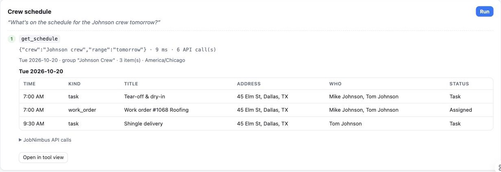
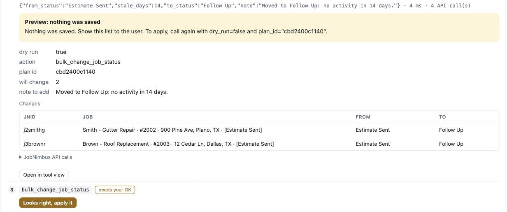
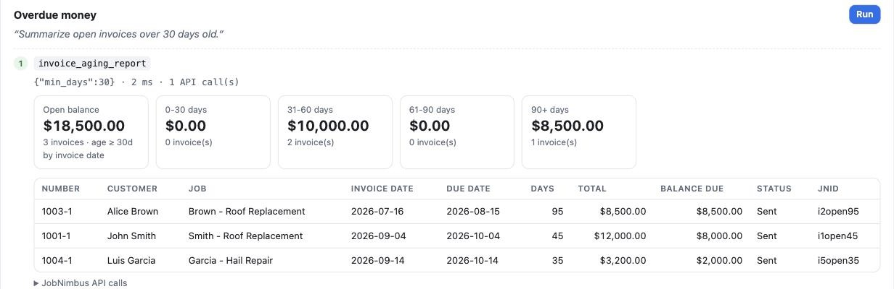
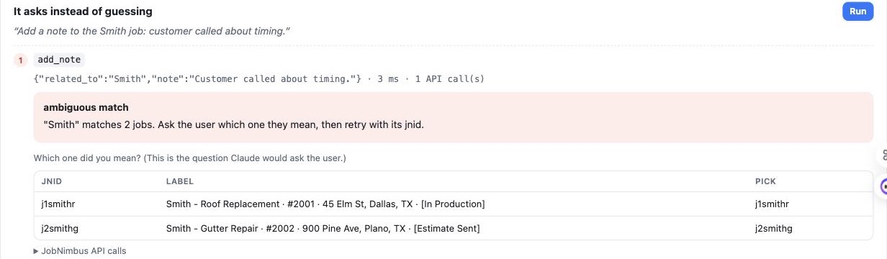

Ask about tomorrow's crew schedule, log a storm lead, chase stale estimates, or total up overdue invoices, all in plain English. The assistant works on top of your JobNimbus account and shows you exactly what it will change before it changes anything.

No new software for the crew to learn. The same records, workflows, and statuses you already use in JobNimbus, without the clicking.
It finds the stale jobs, lists exactly what will change, and waits for your OK. If the list changes before you approve it, it stops and asks again.

Open balances by age, by customer and job, in seconds. Ask follow-ups like “which of these are insurance jobs?” or “draft a reminder for the oldest one.”

Two Smith jobs? It asks which one, by address and job number, rather than picking one. The same goes for team members, crews, and statuses.

Creates the contact, checks for duplicates, opens the job, assigns the rep, and books the inspection on the calendar.
Prices come from your product catalog. You see the totals before anything is saved.
Pulls status, schedule, invoices, payments, and recent notes into a plain-language customer update.
An assistant that can edit your CRM has to be more careful than a person, not less. These guardrails are built into the software itself, not left to the AI's judgment.
Every change can be previewed field by field. Bulk and financial changes always start as a preview and need your approval.
Deleting is switched off unless you turn it on. Bulk changes are capped per request.
Connects with a JobNimbus API key tied to an access profile you choose. Read-only pilots are the default.
“Thursday 10am” is read in your time zone, and the exact date is repeated back to you before anything is booked.
Statuses, task types, and team members are checked against your JobNimbus settings. Invalid choices come back with the valid options.
API keys and customer details are never written to logs, and uploads never expose your credentials.
It uses JobNimbus's documented public API, so it can do what that API allows. Here's the plain-English version.
On desktop or the web, in plain English. Your team uses an app they may already have.
Turns requests into safe, validated JobNimbus actions: previews, permission checks, and "did you mean?" questions.
The same records your office and crews already use. Nothing to migrate.
We start on sample data, then on your account read-only, and only turn on changes once your team trusts it.
We run your real day-to-day questions against a realistic sample roofing company, no account access needed.
Schedules, pipeline summaries, stale leads, and invoice aging on your real data, with no ability to change anything.
Lead intake, scheduling, notes, and bulk follow-ups with previews. We train your office team and tune it to your workflows.
No. Your office and crews keep using JobNimbus exactly as they do now. The assistant reads and updates the same records through JobNimbus's official API.
No. It's an independent integration built by thinkcreate.ai on JobNimbus's public API. JobNimbus is a trademark of its owner, and this product isn't affiliated with or endorsed by JobNimbus.
Claude, made by Anthropic. Your team chats with Claude, and Claude uses our connector to act on JobNimbus. The connector uses the Model Context Protocol, an open standard for connecting AI assistants to business tools.
The connector runs on your machine or on infrastructure we set up for you, and it never stores your CRM data. When you ask a question, the relevant records are sent to Claude to answer it, under Anthropic's terms for the plan you use. We'll walk through the details, and the right Claude plan for your business, during the pilot.
Bulk and financial changes always start as a preview that needs your approval. Deleting is switched off. The pilot starts read-only. Its access is limited to the JobNimbus access profile you assign to its API key.
Not through JobNimbus. Its API doesn't support sending messages or emails. It can draft the text for you to send, and we can connect other tools (for example your phone or email system) as a separate project.
Bring the three things your office asks about most. We'll show the assistant handling them in 20 minutes.
Book a demo with thinkcreate.ai